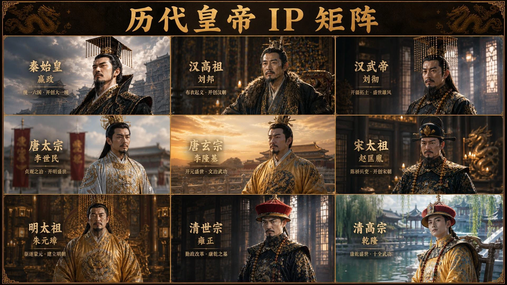

赋予形象
IP 设计与孵化
从人物设定到视觉风格，让独一无二的数字生命拥有自己的表达。IMAGINATION BECOMES ALIVE
AI 时代的数字 IP 宇宙
以想象力创造角色，以故事连接真实世界。
01 / ABOUT US
我们是瞬创视界，一家扎根杭州的虚拟 IP 孵化与 AI 剧集创作公司。
从一首歌、一部剧，到一个不断生长的数字宇宙。我们让固定的虚拟演员阵容走进不同故事，让观众从「追剧」到「追人」，让每一次相遇，成为长久的陪伴。
了解我们的创作方式 ↗02 / OUR DIGITAL UNIVERSE
不同个性，同样鲜活。
认识瞬创的数字生命。
03 / POWERED BY AI
从灵感到荧幕
打通数字 IP 的完整生命旅程。
IP 设计与孵化
从人物设定到视觉风格，让独一无二的数字生命拥有自己的表达。AI 内容生产
自研分镜工具、换脸工作流与内容引擎，让角色持续走进新的故事。全平台内容运营
短剧、音乐、演出，多种内容形态连接不同圈层，积累真实的喜爱。IP 商业化
品牌联名、IP 授权与线下体验，让数字影响力延伸到真实生活。04 / SELECTED WORKS
MUSIC / LIVE PERFORMANCE
苏晓、苏晞与 NANA，跨越次元的音乐相遇。

AI SERIES / HISTORY
以 AI 重述历史，让故事拥有新的可能。
与优秀的伙伴，共创下一种可能
LET’S CREATE WHAT’S NEXT
品牌合作 · IP 授权 · 内容共创 · 创作者入驻